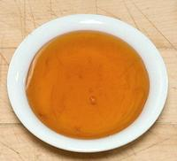

SAFARI
Users
- General & History -
- Artificial Sweeteners -
- Agave Nectar
- Beet Sugar
- Cane Sugar - and related products,
- Corn Syrup
- Maple Syrup
- Other Sweeteners are listed alphabetically
- Health Considerations - and science stuff
- Links -
General & History
Sugar came to Europe during the Crusades. The Arabs had learned of cane sugar from their invasion of Persia where Darius had centuries before discovered "honey without bees" from his invasion of India.
Sugar cane appears to have been enjoyed by humans in Indonesia 10,000 years ago but was first exploited as an industrial product in India. Because cane grows only in the tropics it was long very expensive in Europe due to trade monopolies and luxury taxes - in fact it was so expensive it was presumed to be a powerful medicine. Some things just never change.
Since sugar was an item of prestige, the stage was set for a sugar binge as it became less expensive, just as white rice did in Southeast Asia. Just as with white rice health problems followed (ask George Washington about his teeth).
The Spanish brought sugar cane to the New World where it grew exceedingly well. Molasses, a byproduct of sugar refining, became a key in the "Triangle Trade". The English bought slaves in Africa and sold them to sugar plantations in the West Indies. Molasses was shipped from the West Indies to New England for conversion to rum. The English traded manufactured goods to New England for rum and raw materials, then sold manufactured goods and New England rum in Africa to buy slaves to sell in the West Indies.
While it had been known for over 150 years that sugar could also be made from beets, production of beet sugar didn't began until the Napoleonic wars when England cut off the cane sugar supply to continental Europe. It is now grown and refined widely in North America and Europe.
Artificial Sweeteners
Artificial sweeteners have a checkered history. They've been quite successful in diet soft drinks, but have been less successful in baked goods where baking temperatures destroy them and where sugar does more than just sweeten. Research continues.
Health & Safety: Whether artificial sweeteners are
safe has been hotly debated, with cancer the main concern. Now, due to
improved studies, evidence is mounting that they contribute to an
imbalance in beneficial gut microflora and cause metabolic
disruption. The result is that they can actually
promote obesity, quickly induce pre-diabetic conditions
and encourage development of type 2 diabetes. This is exactly
opposite of the presumed benefits to be gained from them. You can read
more in an article at Science Daily (S11).
- Acesulfame K: [Ace K, Sweet One, Sunnett, acesulfame potassium] Similar to Saccharin but resistant to baking temperatures, it is now found combined with Sucralose in some baked goods. Studies of its safety have so far been few.
- AminoSweet: Aspartame rebranded to hide that fact that it's aspartame - see below.
- Aspartame: [NutraSweet, Equal] was discovered in 1965. It is used in Diet Coke, Diet Pepsi and other products. Aspartame can't be used in baked goods because it can't stand heat. Once listed by the military as a biological warfare agent, this sweetener was approved under heavy political pressure (Dick Cheney was reportedly involved). This was done despite very flawed testing and it remains highly controversial among food scientists (S8). It accounts for more bad reaction complaints than any other FDA approved substance. Among reported negatives: causing brain tumors in rats at relatively low dosages, headache, memory lapses, vision changes, convulsions, hallucinations, behavioral disturbances, nausea, joint pain and degradation of mental function. Studies of multiple artificial sweeteners have found aspartame to be the worst of those tested, and it raises insulin levels as much as sugar does.
- Cyclamate: [Canadian Sweet 'N Low] was discovered accidentally in 1937 and was the leading artificial sweetener in the U.S. until banned by the FDA in 1970 because massive doses caused cancer in rats. This ban is not in place in most countries and still highly controversial due to the massiveness of the doses. The FDA is considering reconsidering.
- Dulcin: This sweetener was used during World War I. It was tasty but toxic and was withdrawn after a few children died from it.
- Neotame: This latest sweetener approved by the FDA is 7000 to 13,000 times sweeter than sugar.
- Rebiana: A sweetener developed by Cargil derived from Stevia. It got FDA approval in 2008 so is now on the market.
- Saccharin: [U.S. Sweet'N Low] was discovered accidentally in 1879. it's major marketing problem is an odd lingering aftertaste. In 1977 Massive doses (similar to the Cyclamate study) fed to rats caused cancer, so the FDA was going to ban saccharin, but 30 million angry overweight peasants with torches and pitchforks pounding at their door caused them to reconsider. Warning labels were added to saccharin packages but removed in 2000. Saccharin is banned in Canada with U.S. banned Cyclamate taking its place.
- S6973: This is not actually a sweetener, but a "sweetness enhancer" which makes the sweet receptors in the mouth more sensitive to sucrose. This allows much less sucrose to be used, thus fewer calories in the product. It is made by Senomyx in California and has now received a GRAS (Generally Recognized as Safe) rating from the FDA. It can be used in all manner of baked goods and sweets but not beverages - though a beverage version is being evaluated. It will appear on nutrition labels as "artificial flavor" even though it has no flavor of its own.
- Sucralose: [Splenda] This sweetener is made by adding chlorine to regular sucrose (cane/beet sugar) making it sweeter and indigestible (0 calories). The FDA approved it in 1998, and competitors immediately sued the makers over the claim "made from sugar, tastes like sugar". Splenda now has 50% of the artificial sweetener packet market.
Agave Nectar
- [Agave Syrup]
This is another skillfully promoted food industry deception. The Agave Nectar of commerce is made not from agave sap but from agave starch. The conversion process is pretty much the same as for manufacturing High Fructose Corn Syrup (HFCS), but the fructose content is much higher than with HFCS. This stuff is being promoted as "natural", as a "Health Food" and a healthy alternative to HFCS. It is now widely sold in markets catering to the yuppie class and is spreading to mainstream markets.
Agave nectar is being advertised as having a "low glycemic index", but some researchers suspect that depending on low glycemic sweeteners actually increases insulin resistance, so what is sold as good for diabetics may actually make the problem worse in the long run.
Agave starch consists mainly of inulin (fructosan), a complex form of fructose which ends up as 58% to 92% fructose in the final product, with most of the rest being glucose. Having up to nearly twice the fructose of High Fructose Corn Syrup, it can cause severe health problems if used heavily.
Vegans often use Agave Nectar in place of honey, because honey exploits
animals (bees). Apparently the poor agave worms crushed to death in the
process of making agave syrup are not being "exploited". Vitamin B12
content will depend on the number and quality of the worms crushed.
My personal opinion is that agave nectar should be used only in moderation, preferably after it has been properly fermented, distilled, aged and bottled as Tequila.
Allulose / Psicose
- [D-Psicose, D-allulose, D-ribo-2-hexulose, C6H12O6]This is an almost no-calorie sugar found in nature. A process has been developed to produce it from fructose by enzyme action. Taste is simmilar to sucrose, it has about 70% of sucrose's sweetness, and it behaves much like sucrose for culinary applications. It has little effect on glycemic response. It is currently popular in Japan as a "rare sugar", and the US FDA has issued a no-objection letter for GRAS (Generally Regarded as Safe) rating. It is not yet approved in Europe. The main drawback to this sugar is the cost of production, which is high.
Beet Sugar
- [Sucrose]Sugar beet is a major crop in North America and Europe and has the advantage that it can be grown much closer to the customers in those areas. A molasses is produced by refining beet sugar but it isn't like cane molasses and is used for animal feed.
Beet and cane sugar are both 99.95% sucrose, chemically identical and
interchangeable for many applications, but not for all. In making
confections, crème brûlée, butter cream, cookies and
cakes they behave differently (S9) with cane sugar
definitely superior.
Photo by U.S. Agricultural Research Service = public domain.
Birch Syrup
- [varies but roughly Fructose 50%, Glucose 45%, other sugars 5%]Birch syrup is made by methods similar to making Maple Syrup but from birch trees in regions so cold maple trees dare not go there. Birch syrup is made in Alaska, Siberia, Finland and the coldest parts of Canada.
Originally there was only one grade, dark - too dark and too strong to pour on pancakes but only used as a flavoring ingredient. Modern methods of lower temperature processing have made possible lighter grades similar to the grades of maple syrup. Birch syrup is made in quantities so small the USDA has been uninterested in regulating so grade names are arbitrary and simply made up by individual producers.
Birch syrup is much more difficult to make than maple syrup so costs about five times as much. Alaska is considered a large producer but total output there is probably under 2000 gallons U.S. per year. In Siberia and Finland birch sap is also made into soft drinks, beer and vinegar.
Cane Sugar
- [Sucrose]The sugar cane, Saccharum officinarum, is now grown throughout the tropics. Cane is crushed for the juice from which sugar is extracted in several "boilings".
Sugar can be dried and packaged before all the color and "impurities" are removed. This may be done for flavor, for a "natural" color, or to satisfy "health enthusiasts" who think they're getting a more nutritious product. Well, they are, but nutrition in such minute amount as to not matter one iota - it's sugar and just as bad for you as any other sugar. Molasses is a byproduct of this process.
Cane and Beet sugar are 99.95% chemically identical, but not always
interchangeable, particularly for making confections,
crème brûlée, butter cream, cookies and cakes where
can sugar is superior - see Note-S9.
Cane sugar is sold commercially in several forms:
- Barbados Sugar is the same as Muscovado sugar.
- Brown Sugar is made by mixing some syrup back into the sugar. Color and consistency depend on how much and what darkness of syrup is used.
- Castor Sugar is white sugar with a very small crystal size.
- Confectioner's Sugar is white sugar ground to a fine powder and mixed with cornstarch to keep it from caking. Because of the cornstarch it cannot substitute for other sugars.
- Demerara Sugar is an "uncontrolled substance" which may be a partially refined sugar with residual nutrients or may be manufactured out of white sugar at a factory in England or Canada. Named for Demerara, Guyana, it is made up of fairly large, slightly sticky crystals with a distinctly yellow tint. In England it is the preferred sugar for coffee.
- Golden Syrup is a white sugar syrup which has been processed to split some of the sucrose into glucose and fructose to prevent it from crystallizing.
- Icing Sugar (see Confectioner's Sugar).
- Jaggery is partially refined sugar sold in loafs in Indian groceries. Note that some "jaggery" is not cane sugar but one or another variety of Palm Sugar. Palm is more expensive.
- Muscovado sugar is properly a dark sticky sugar with a molasses flavor from the first boiling in the refining process. Today it is most likely faked up from refined sugar and molasses at a refinery. It should have a rum and molasses flavor and is available in dark and light versions.
- Powdered sugar (see Confectioner's Sugar)
- Preserving Sugar is a white sugar of very large crystal size.
- Raw Sugar can be just about anything the seller wants it to be, a partially refined sugar or a white sugar some refining byproducts have been added back to. Jaggery from India is actually a partially refined, thus "raw" sugar.
- Refiners Syrup - same as Golden Syrup.
- Rock Sugar: Cane sugar recrystalized from a supersaturated solution, available in various natural and artificial colors. See Rock Sugar.
- Turbinado Sugar is supposed to be "washed raw sugar" from which some of the surface molasses has been removed but may be faked up at a refinery. It is named after the "turbines" used for the first separation and is similar to Demerara Sugar.
Coconut Sugar
- [Gula Java (Indonesia)]A variety of Palm Sugar, generally darker and with a smokier flavor than sugar from the Palmyra Palm.The photo block, from Indonesia, was 2.3 inches diameter and 2.6 inches high, purchased from a large Asian market in Los Angeles (San Gabriel) for 2017 US $2.19 for 9.5 oz. It was considerably softer and easier to shave off than regular palm sugar. Ingred: coconut sugar, cane sugar (5%).
Corn Syrup
- [Maize Syrup; Glucose, from Zea Maize]
Corn Syrup, a sugar that's almost entirely glucose, is created by enzyme
processing of corn starch. It can be further processed into
High Fructose Corn Syrup. The photo specimen is Karo Light corn
syrup (they also have a dark, presumably to replace Malt Syrup in baked
goods). This syrup is very widely available in North America, used as a
sweetening and glaze. It is often used by Korean expats as a substitute
for Korean Malt Syrups, and has
somewhat replaced real malt syrup in Korea itself, due to being cheaper.
High Fructose Corn Syrup [HFCS]
This modified Corn Syrup is not generally a consumer product, but rather sold to food processors. Corn Syrup is further processed by enzymes to convert much of the glucose into fructose (about 42% fructose (HFCS 42)). Some is further processed to 90%, then mixed back to make a 55% syrup (HFCS 55), about as sweet as sucrose.
The food processing industry is always anxious to reduce costs for maximum profit. Corn syrup is very cheap due to government subsidy of corn farming. High Fructose Corn Syrup is sweeter than regular corn syrup so less needs to be used.
Soft drink manufacturers now use HFCS in beverages that were once sweetened with cane sugar. Many consumers prefer cane sugar and pay higher prices for the same beverage smuggled in from Mexico where cane sugar is still used. The beverage industry has responded not by selling consumers what they want but by attempting to stop importation by any means, legal or questionably legal.
Health aspects of HFCS have been controversial. Some have claimed it increases obesity and diabetes.. The industry, and dietitians under its influence, have claimed it's no worse than any other sugar in that respect and overall sugar consumption should be blamed. New studies by the University of California and Princeton University both point to HFCS being more dangerous than other sugars. See the Health and Nutrition section for details.
Date Sugar
Made by granulating dried dates, this is used as a "finishing sugar" for toppings, pastries and fruit. It remains granular rather than dissolving easily like other sugars so cannot be used as a substitute for them.
Golden Syrup
 [Partially Inverted Refiners Syrup]
This is made from a sugar syrup (sucrose) that is a byproduct of sugar refining. It is partially broken down into Invert Sugar consisting of 50% sucrose and the rest fructose and glucose. This sugar syrup will not crystalize, making it desirable for bakers. It has the color and viscosity of honey. Invented by a Chemist at Abram Lyle & Sons and first marketed in 1885, it is still made at the Tate and Lyle refinery in East London - but the brand is now owned by ASR Group (American Sugar Refiners).
A very similar product can be made in the home by dissolving 4 cups of sugar in 1-1/4 cups of Water, bringing to a boil and stirring gently. Then stir in 2 Tablespoons of Lemon Juice (or 1/2 t Citric Acid) and cook uncovered over very low heat, without stirring, until it takes on a honey color.
Gur
- [Jaggery, gur (India)] - Gur is synonymous with Jaggery.Honey
Zillions of bees visit hundreds of zillions of flowers and suck the nectar out of them (which is there to attract pollinating bees).
When they return to their hive they barf it up into wax cells where it is mixed with antiseptic substances secreted by the insects, properly dehydrated and then capped. Bees are absurdly industrious and manufacture far more honey than they actually need.
Beekeepers break into the beehives and remove most of the wax "honeycombs" as rent for living in a beehive provided by the beekeeper and conveniently prefitted with wax honeycomb bases ready to start filling. It's not all that hard on the bees, they really don't have much else to do anyway.
Honey varies in flavor depending on the kind of flowers that predominate in the area, such as sage and orange blossom honey which can be sold at gourmet prices.
Purely natural honey is minimally processed, basically just drained off the wax (and sometimes not even that), Most commercial honey, however, has been filtered and pasteurized and some of its health benefits may have been destroyed. In either case, it's still about 80% sugar and 17% water. The main sugars are fructose (38%), glucose (31%), maltose (7%) and sucrose (1%), so its sugar profile is slightly better than High Fructose Corn Syrup. Whether natural fructose is metabolically different from artificial fructose is subject to debate. Honey contains a number of vitamins, minerals and proteins but in far too small a quantity to be nutritionally significant. It also contains acids, hydrogen peroxide and other anti-bacterial substances.
Caution: A large amount of honey sold in North America is from China, and very often it's origin has been concealed by "laundering". Chinese honey is noted for contamination with lead (apparently China's favorite mineral) and the antibiotic chloramphenicol, banned by the FDA, as well as other foreign substances. Much Chinese honey is cut with sugars and some is completely fake. If you buy processed foods touting "with natural honey" you are likely getting Chinese honey, because it costs the processors less. Importation of Asian honey is banned in Europe.
Invert Sugar
- [Trimoline, Golden Syrup]Cane sugar (sucrose) processed to break sucrose molecules into one glucose and one fructose molecule. This gives the sugar a sweeter, "more rounded" flavor, and it won't crystalize, preferred by bakers. Golden Syrup is a partially converted syrup.
Jaggery
- [jaggery, gur (India), nam taan oi (Thai)]An unprocessed sugar, generally cane sugar but sometimes palm sugar, much used in India and Southeast Asia. It will be cane sugar unless marked "palm jaggery" because palm is generally more expensive. The flavor of cane jaggery is between dark sugar and molasses. See also Palm Sugar.
Jaggery is commonly molded into blunt cones as in the photo, which may
be anywhere from a few ounces to 10 pounds. Other shapes are also sometimes
found. Subst: Mexican Piloncillo (closest) or dark
brown sugar.
Malt Syrup - Asian
- [Mulyeot (Korea); Mizuame (Japan) - Maltose]This syrup is not to be confused with the dark heavy malt syrup used by brewers and bakers in North America. It is easily available in Korean markets, in both clear and amber varieties. It has the same consistency as honey, and the amber has a similar, but much lighter, flavor. They are about 1/3 as sweet as honey or sugar. Even the amber is much lighter than Ssalyeot (rice syrup) which is 100% malted rice.
Subst: The closest American substitute is Corn Syrup.
Not the "High Fructose" variety, but plain corn syrup, like Karo Light.
The malt flavor of the amber malt syrup won't be there, and Corn Syrup
is significantly sweeter, but it will work for sweetness and glaze.
Details and Cooking.
Maple Syrup
- [Sucrose]Maple syrup is a sweetener made by boiling down the sap of a hardwood tree of the soapberry family, the Maple (Acer). Maple syrup finds wide use for pouring on breakfast pancakes and as a flavoring ingredient in baked goods and candies. The sap is produced only in very cold forest areas, mainly Vermont and Canada, both of which claim their maple syrup is better than the other. The production season generally lasts for 6 weeks in the Spring.
Maple Syrup grades are established by the USDA. Canada adheres to similar grading but uses different names. These are not quality grades. There are no cheap Chinese sugar maples so we presume all the trees are of the highest quality (but fake maple syrups are made). These are usage grades, and the makers have little control as to what grades they'll get in any particular year, that's pretty much up to the trees.
- Grade A Light Amber is the lightest grade and has the mildest maple flavor. It's usually made early in the season when the weather is colder. This grade is preferred for making maple cream and maple candy.
- Grade A Medium Amber is somewhat darker, and the maple flavor is a little more intense. This is the most popular table syrup grade. It usually is made about mid-season when the weather warms a bit.
- Grade A Dark Amber is the darkest grade commonly used as table syrup and is normally made late in the season.
- Grade B is often called Cooking Syrup and is made late in the season. It is very dark with a strong maple flavor, but some prefer it as table syrup for just that reason. Most use it for baking, and flavoring foods.
Molasses
- [Treacle (British)]Molasses is a black sticky byproduct of refining sugar. At one time it was the standard sweetener in the U.S. (now replaced by High Fructose Corn Syrup) so many older recipes call for it. If no qualifiers are given, presume it's "dark molasses". Cane sugar is refined in several boilings, each with its byproducts.
In Colonial times, Molasses was very common in New England, because
it was part of the "Triangle Trade". African slaves were brought to the
Caribbean to grow and harvest sugar cane. Molasses was shipped to New
England, where it was distilled into Rum. This was traded in various
ways to afford more slaves to take to the Caribbean to grow more sugar
cane.
- Unsulfured Molasses is made from sun ripened cane.
Sulfured Molasses is made from green cane treated with sulphur fumes. - First or Light Molasses is a light colored product from the first boiling or the cane squeezings and has a high sugar content.
- Second or Dark Molasses is from the second boiling. Less sweet with just a touch of bitterness.
- Blackstrap Molasses comes from further boilings, is less sweet and more bitter. Blackstrap molasses somehow became a "health food" icon even though it may concentrate all the impurities and pesticides from the sugar cane.
Monk Fruit
- [Luo han guo (China); La han qua (Viet); longevity fruit (not unique); Fructus Momordicae (Pharm); Siraitia grosvenorii]Native to southern China and northern Thailand, this gourd is related to the Bitter Gourds, but genus Siraitia, not Momordica). This fruit has recently become much better known in the West. Extracts from this fruit are 300 times sweeter than cane sugar, with almost no calories. The US FDA (Food and Drug Administration) has recently rated the fruit and extracts from it as GRAS (Generally Regarded As Safe), so they can be included as natural sweeteners in any number of products. This sweetener has not yet been shown to have the serious negative effects of artificial sweeteners, but sufficient studies looking for those have yet to be conducted..
This sweetener has not yet been shown to have the serious negative
effects of artificial sweeteners, but sufficient studies looking for
those have yet to be conducted. The fruits grow on vines and are
between 2 to 2-3/4 inches diameter with sweet, fleshy edible pulp
and many seeds. Details and Cooking.
Palm Honey
Palm sap boiled down to a honey like consistency. See Palm Sugar for details.
Palm Sugar
A number of Palms are used to make palm sugar. Immature flower buds are pounded and cut to exude a sweet sap (sweet toddy) which is collected and boiled down to sugar of various consistencies. It is most available in the U.S. as small cakes sold in markets serving a Southeast Asian communities and in Indian markets as "Palm Gur" or "Palm Jaggery".
This is a very light and flavorful sugar with a lot more nutrients left in it than most sugars and is very important in the cuisine of Thailand. It is commonly available in the U.S. but if you don't have it substitute equal parts of light brown sugar and maple syrup.
Piloncillo
(variously spelled)Mexican Jaggery. It comes in two varieties, light (blanco) and darker (oscuro). The loaves are generally pointier and smaller than the product from India, weighing between 3/4 ounce and 9 ounces. Similar products are made in other Central and South American countries and It's easy to find in any grocery that serves a Latin community. Subst: Jaggery (closest) or dark brown sugar (close enough for government work).
Rice Syrup
- [Ssalyeot (Korea); Brown Rice Syrup - Maltose]This syrup is available in most Korean markets, at least here in Los Angeles. Preferably it will be labeled "100% rice" with no other ingredients. It has the same consistency as honey but with a lighter flavor, and is about 1/3 as sweet as honey or sugar. It has more malt flavor than Mulyeot (malt syrup) which is made somewhat differently. Health Food outlets now sell "Brown Rice Syrup", mostly from California rice grower Lundberg Farms, which is similarly made.
Subst: The amber Mulyeot (malt syrup) would be closest,
just a little lighter flavor. The Lundberg product would be the closest
American substitute, and next closest is is Corn Syrup. Not the "High
Fructose" variety, but plain corn syrup, like Karo Light. The malt flavor
will be missing, and Corn Syrup is significantly sweeter, but it will
work for sweetness and glaze.
Details and Cooking.
Rock Sugar
- [Rock Candy; Misri (India)]
This is regular cane sugar crystalized from a supersaturated solution.
It originates from Persia and India and comes in various natural and
artificial colors. Naturally, it comes in Brown, Amber and White,
depending on the degree of refinement of the original sugar. In China,
the Amber is the preferred form for use in recipes. In India, the
White is usually preferred. In several countries, a piece of rock sugar
is often dropped into the bottom of a cup of tea to slowly dissolve.
Sorghum Syrup
Sorghum Syrup is made from sorghum grain, the seed of a grass grown worldwide as a major food crop. For syrup a particular cultivar known as "sweet sorghum" is used.
Sorghum syrup has long been used in the American South for pouring
over pancakes, biscuits and corn bread and as a flavoring ingredient much
as maple syrup has been used up north. This usage has become much less
common now that artificial maple syrup and other sweeteners have become
widely available. It has, however, recently started gaining popularity,
and there are now some boutique producers of high quality syrup.
Stevia
- [Sweetleaf, Sugarleaf; Stevia rebaudiana]A Paraguayan herb the leaves of which are extremely sweet. An extract from the leaves is hundreds of times sweeter than table sugar, has almost no calories and is safe for diabetics. It has been widely used in Japan for 30 years to replace artificial chemical sweeteners.
Until 1998 it was not approved as a sweetener in the U.S., Canada, the European Union, Australia or New Zealand. Under FDA regulations it was legal to own and even sell stevia, but in doing so you had to call it a "dietary supplement" and not even mention that it was "sweet". This is still the case in Canada and Europe (except France), but it is now approved as a sweetener in the U.S., Australia and New Zealand.
This regulation was not be entirely due to pressure from the sugar and chemical industries. While it has proved safe in South America and Japan, the FDA pointed out it is used sparingly there and worried that obsessive American dieters would use it to excess, as they do with every other diet fad that comes along.
This sweetener has not yet been shown to have the serious negative
effects of artificial sweeteners, but sufficient studies looking for
those have yet to be conducted. Some negative reproductive effects have
been noted from feeding rats and hamsters heavy doses, so they say more
research is warranted. Of course the danger is probably much less than
for approved Artificial Sweeteners.
Syrup
Any sugar solution or sweetener that is viscous but remains liquid and pourable. Simple Syrup is just regular refined sugar cooked with some water.
Treacle
Now mostly a British term, it technically is any syrup made during the production of sugar from sugar cane. In current usage "Light Treacle" refers to Golden Syrup and "Black Treacle" refers to Dark Molasses.
Trimoline
- see Invert Sugar.Health Considerations
| Sugar | Sweetness | Common Name |
|---|---|---|
| Sucrose | 1.0 | Sugar |
| Glucose | 0.7 | Grape Sugar |
| Fructose | 1.1 | Fruit Sugar |
| Lactose | 0.4 | Milk Sugar |
| Maltose | 0.5 | Malt Sugar |
| Sorbitol | 0.5 | - |
Starches and sugars are carbohydrates manufactured by plants as energy storage. They can be converted one to the other and in some cases are further converted into oils. In the case of fruits, that energy is stored for animals the plant depends on to distribute its seeds (most plants don't travel much). In the case of nuts, seeds and grains, the storage is for the use of the plant's own progeny.
Plants convert from one form to another for various reasons. Generally when its seeds are fully mature a fruit will "ripen", converting starches to sugars to attract seed distributing animals, many of which are partial to sweet treats.
We inherited this taste for sweet things from our distant ancestors. The problem is, sugars were rare and hard to get for them. Today they are easily available and cheap, especially in refined form. We tend to eat far too much sugar and in refined forms that our ancestors did not consume. This over consumption is not good for our health.
The food industry is not particularly interested in our health but is very interested in our willingness to over-consume sweet things, because we pay them to obtain those things.
Fructose
This sugar is found mainly in fruit. Nutrition researchers have found it is metabolized somewhat differently from other sugars, putting heavier load on the liver and pancreas. Eating a reasonable amount of fresh fruit is considered very good for health, but it can apparently be overdone. Juices are particularly bad because they are in a concentrated, processed and unnatural form. Apple Computer founder Steve Jobs was a frutarian much of his life, drinking large amounts of fruit juices. He died of a type of pancreatic cancer that is quite rare, but most common in frutarians. This is not proof, but a strong indication that moderation and unprocessed foods are the best policy.
High Fructose Corn Syrup
- [HFCS (US); Isoglucose (UK), Glucose/fructose (Canada)]High Fructose Corn Syrup is an industrial product produced by a complex process involving genetically modified enzymes, fungus, hydrochloric acid and caustic soda, and is made from (mostly) genetically modified corn.
A significant number of nutritionists consider HFCS more dangerous than other sugars and note an increase in childhood obesity and diabetes that parallels the increase in HFCS use in soft drinks, sweets and processed foods. The corn processing industry has denied any connection and blames high overall sugar consumption (which they promote).
A recent study completed in 2009 by the University of California, the first using human test subjects, has come down hard on the side of HFCS and fructose in general being seriously more dangerous (S5). The corn processing industry has denounced the study as nonsense (without presenting any evidence). The study was fairly small so larger studies are warranted.
An even newer study from Princeton University backs up the UC study's conclusions (S7), so it now appears fully warranted to avoid products containing HFCS as much as possible.
What is NOT controversial among health professionals is that Americans should greatly reduce the total amount of sugars they consume. The food industry, of course, gives lip service to this concept while vigorously promoting heavily sweetened products.
Links
- S2 - Stevia, pro - Stevia.net
- S4 - Honey composition - University of Bristol School of Chemistry.
- S5 - High Fructose Corn Syrup - Grist.org: Comments on UC Davis study, including corrections by a participant in the study.
- S6 - S6973 - News Medical - FEMA finds Senomyx' S6973 sucrose enhancer safe.
- S7 - High Fructose Corn Syrup is worse - Princeton University.
- S8 - Aspertame - Sweet Poison? - EcoVision Journal.
- S9 - Cane/Beet Sugar Different - SFGate.com.
- S11 - Obesity and Diabetes encouraged by Artificial Sweeteners - Science Daily